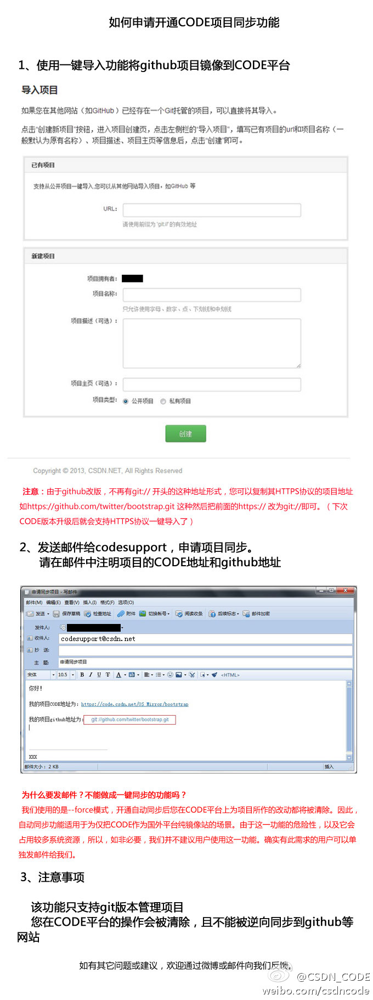

#社区运营# 产品经理是新出现的职业。我相信社区运营也会成为一个独立的，越来越受重视的职业。这两个职业有些共同点：受惠于互联网的普及和应用，格外关注用户体验，科学与艺术相结合。不同点是社区运营更多琢磨的是人和人群。
如果定义宽泛的话，最早的部落酋长就是社区运营者，有几万年历史了呢。 //@_李宁_:产品经理起源于19世纪初，快100年的职业了，好8@Ada李力:#社区运营# 产品经理是新出现的职业。我相信社区运营也会成为一个独立的，越来越受重视的职业。这两个职业有些共同点：受惠于互联网的普及和应用，格外关注用户体验，科学与艺术相结合。不同点是社区运营更多琢磨的是人和人群。
#社区运营# 社区也是一种组织，这种组织的最高境界是通过大家的协作，生产出有价值的东西。LINUX是最典型的例子。社区这种组织，有些方法可以借鉴公司这种组织，但社区与公司最大的不同是：社区没有法人，社区成员之间没有显著的契约关系，社区不会承诺给成员的回报。
#社区运营# 如果世界大同，人们迁移不再受国籍地域所限，一定有些地区人满为患。现实中不大容易迁移，但互联网构成的虚拟空间，社区间的迁移就是点几下鼠标或做几个手势的事情。社区运营者得想想，别人为什么要呆在你的社区里？你有什么措施和手段留住他们。
好项目可以多备份几个地方。国内CODE访问代码速度更快。@CSDN_CODE:【CODE平台支持开源项目自动同步啦！】如果您在github等Git平台托管了项目，可将项目镜像到CODE平台，我们在后台开启自动同步功能，CODE平台会每天将原项目的更新同步到镜像项目上。如需开通此功能，请发送项目的CODE地址和对应github地址到codesupport@csdn.net申请。 @CSDN @蒋涛CSDN 